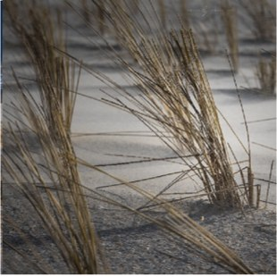
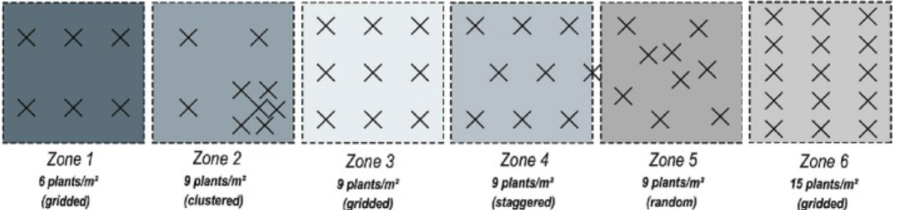
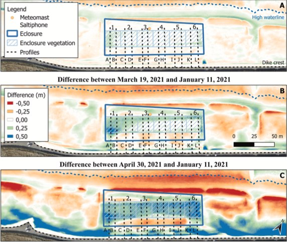

Do you enjoy going to the beach on a nice summer day? I'd be surprised if you answered no. Have you noticed that many beaches follow a slope downward, forming a small dune? You may not think much of it, but these dunes provide flood protection to wildlife and infrastructure near beaches. Without these, many coastal areas would see flooding due to storms. Dune erosion, which is an effect of these storms, can aid said flooding, and in extreme cases, cause the beach to vanish. As climate change causes sea levels to rise, protecting dunes becomes even more of a priority. Coastal managers and people with beachfront property often include plants in their designs in order to create dunes, protecting areas from flooding (Wittebrood et al., 2018). However, the effect of different patterns and densities of plants on dune height and growth rate is not well understood. A 2023 study by Derijckere et al. aims to give clarity on which planting methods would best lead to dune growth.

For this experiment, researchers closed a large portion of a beach in Belgium off to visitors, creating six distinct sections within that area. The site was on the upper beach in front of a seawall, so the experiment tested a practical coastal-protection problem. Each area was 20m by 20m wide. The six areas were numbered 1-6. The researchers then planted marram grass in specific patterns and densities. The first area had a gridded plant setup with low plant density. The middle four had medium plant density: number 2 clustered, number 3 gridded, number 4 staggered, and number 5 random. Finally, area 6 had high plant density in a grid.

These six designs compared both density and pattern, which matters because the shape of a dune depends on how wind slows down around plants. The experiment was standardized so that the grass was about 40cm tall and dug 15cm deep. If you have been to a beach, you probably have seen these before; they look a lot like straw.
To understand the effects of marram grass planting methods on dune height, researchers needed to accurately measure dune height daily across the whole research area. To do this, they used a combination of drone images with post-processing, height measurement rods with pressure sensors, and GPS positioning systems accurate to the centimeter. In simpler terms, they tracked dune height, expansion, and sand movement.

The introduction of plants in all cases increased the height of the sand dune, indicated by blue shading. Dune 1, which contained the low-density gridded plants, was the fastest growing in volume, meaning it gained height quickly across a broad area, but did not reach nearly as high a peak as other configurations. Unlike other zones, its growth was spread farther landward. The area with the high-density gridded plants, zone 6, achieved the tallest overall peak. Staggered and random plant formations created narrower, shorter dune shapes than the gridded versions, while the dense grid trapped sand close to the front of the plants.
It's also important to note that not only did areas with grass grow dunes during this time, but most areas around them with no grass experienced a decline in sand height, noted by orange coloring. That comparison matters because the plants did not create sand; they were catching sand that otherwise would have kept blowing across, and potentially even off the beach. That made the planted dunes stronger relative barriers compared to the surrounding sand. This is the part of the study that is most useful for coastal planners.
However, the authors note that "the comprehensive effects of vegetation on ... sediment transport rates and the subsequent dune development are [still] complex and poorly understood due to multiple factors influencing the flow in and around vegetation, including cover, density, and spatial distribution" (Derijckere et al., 2023). Essentially, they now know what patterns work best, but they still don't know why.
This paper has opened up the question of specifically how the movement of sand into planted areas works. The authors emphasize that future studies should focus on why certain plant layouts alter wind flow so effectively. They also warn that by the end of the study, the grass was nearly buried, allowing some sand to bypass the dune instead of continuing to build it. By refining these planting strategies, we can better protect beaches from erosion and flooding in a world where sea levels are rising.
Works Cited
Derijckere, J., Strypsteen, G., & Rauwoens, P. (2023). Early-stage development of an artificial dune with varying plant density and distribution. Geomorphology, 437, 108806. https://doi.org/10.1016/j.geomorph.2023.108806
Wittebrood, M., De Vries, S., Goessen, P., & Aarninkhof, S. (2018). Aeolian Sediment Transport at a Man-Made Dune System; Building With Nature at the Hondshossche Dunes. Coastal Engineering Proceedings, 36, 83. https://doi.org/10.9753/icce.v36.papers.83